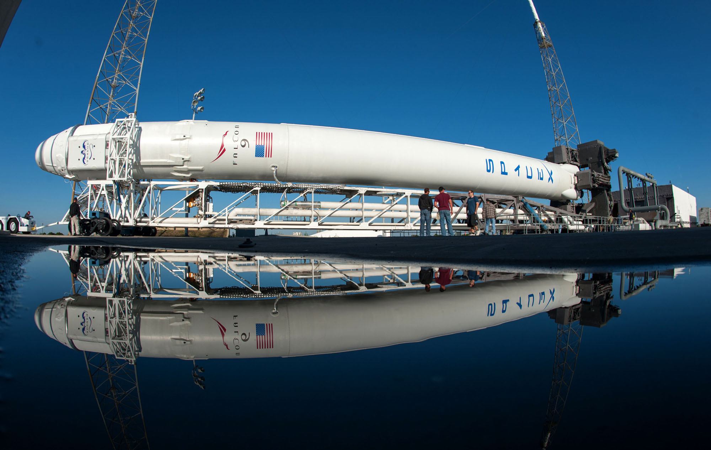

SpaceX

The SpaceX reusable launch system development program is a privately funded program to develop a set of new technologies for an orbital launch system that may be reused many times in a manner similar to the reusability of aircraft. The company SpaceX is developing the technologies over a number of years to facilitate full and rapid reusability of space launch vehicles. The project's long-term objectives include returning a launch vehicle first stage to the launch site in minutes and to return a second stage to the launch pad following orbital realignment with the launch site and atmospheric reentry in up to 24 hours. SpaceX's long term goal is that both stages of their orbital launch vehicle will be designed to allow reuse a few hours after return.
The program was publicly announced in 2011 and the design for returning the first stage of a Falcon 9 rocket to its launchpad using only its own propulsion systems was completed in February 2012.[1] SpaceX's active test program began in late 2012 with testing low-altitude, low-speed aspects of the landing technology. High-velocity, high-altitude aspects of the booster atmospheric return technology began testing in late 2013 and have continued through 2016. SpaceX first achieved a successful landing and recovery of a first stage in December 2015, but continues to do experimental tests on each orbital launch.
The reusable launch system technology was developed and initially used for the first stages of the Falcon family of rockets.[2] The process involves flipping the booster around, a boostback burn to slow the rocket, a reentry burn, controlling direction to arrive at the landing site and a landing burn to effect the final low-altitude deceleration and touchdown. The reusable technology will be extended to the first stage and to both upper stages of the ITS launch vehicle for the Interplanetary Transport System[3][2][4] and is considered paramount to the plans Elon Musk is championing to enable the settlement of Mars.
The first controlled vertical splashdown of an orbital rocket stage on the ocean surface was achieved in April 2014 on the ninth flight of a Falcon 9. Two subsequent flights in January and April 2015 attempted to land the returning first stage on a floating platform. Although both boosters were guided accurately to the target, they did not succeed in landing vertically on the drone ship and were destroyed.[8][9] A historic vertical landing was finally achieved on December 21, 2015, when the first-stage booster of Falcon 9 Flight 20 successfully touched down at Landing Zone 1, Cape Canaveral.[10] On April 8, 2016, Flight 23 achieved the first soft landing on a drone ship in the Atlantic Ocean.[11] Initial test flights of an Interplanetary Transport System vehicle are expected no earlier than 2020
Falcon9

Falcon 9 is a family of two-stage-to-orbit launch vehicles, named for its use of nine first-stage engines, designed and manufactured by SpaceX. The Falcon 9 versions are the Falcon 9 v1.0 (retired), Falcon 9 v1.1 (retired), and the current Falcon 9 Full Thrust, a partially-reusable launch system. Both stages are powered by rocket engines that burn liquid oxygen (LOX) and rocket-grade kerosene (RP-1) propellants. The first stage is designed to be reusable, while the second stage is not.[12] The Falcon 9 versions are in the medium-lift to heavy-lift range of launch systems. The current Falcon 9 ("Full Thrust"[13]) can lift payloads of up to 22,800 kilograms (50,300 lb) to low Earth orbit,[2] and up to 8,300 kilograms (18,300 lb) to geostationary transfer orbit.
The Falcon 9 and Dragon capsule combination won a Commercial Resupply Services (CRS) contract from NASA in 2008 to deliver cargo to the International Space Station (ISS) under the Commercial Orbital Transportation Services (COTS) program. The first commercial resupply mission to the ISS launched in October 2012. The initial version 1.0 design made five flights before it was retired in 2013. The version 1.1 design made a total of 15 flights beginning in 2013 before it was retired in January 2016.
SpaceX has been flying an improved version with 30 percent higher performance —Falcon 9 Full Thrust—since December 2015 on the 20th Falcon 9 launch. This followed the 2013 upgrade which was 60 percent heavier —Falcon 9 v1.1—that flew from September 2013 on the sixth Falcon 9 launch,[16] through January 2016 on the 21st Falcon 9 launch. Falcon 9 Full Thrust will be the base for the Falcon Heavy launch vehicle. SpaceX intends to complete testing in order to achieve certification for the Falcon 9 to be human-rated for transporting NASA astronauts to the ISS as part of a Commercial Crew Transportation Capability contract, also using the Full Thrust version.
Falcon Heavy

Falcon Heavy (FH), previously known as the Falcon 9 Heavy, is a super heavy lift space launch vehicle being designed and manufactured by SpaceX. The Falcon Heavy is a variant of the Falcon 9 launch vehicle and will consist of a standard Falcon 9 rocket core, with two additional strap-on boosters derived from the Falcon 9 first stage.[9] This will increase the low Earth orbit (LEO) payload to 54.4 tonnes, compared to 22.8 tonnes for a Falcon 9 full thrust. Falcon Heavy was designed from the outset to carry humans into space and it would restore the possibility of flying crewed missions to the Moon or Mars.
Following the Falcon 9 CRS-7 failure investigation in 2015, repeated rocket development delays, and given a very busy Falcon 9 launch manifest in 2016, the first Falcon Heavy launch is now expected in early 2017.[4]
Elon Musk first mentioned Falcon Heavy in a September 2005 news update, referring to a customer request from 18 months prior.[10] Various solutions using the planned Falcon 5 had been explored, but the only cost effective, reliable iteration was one that used a 9-engine first stage - the Falcon 9. Further exploration of the capabilities of the notional Falcon 9 vehicle led to a Falcon 9 Heavy concept: "two first stages as liquid strap on boosters, like Delta IV Heavy, allowed us to place about 25 tons into LEO – more than any launch vehicle in use today."
At this time the Falcon 1 had not seen its first flight yet, but SpaceX were intending to use a fleet composed of the 1, 5, 9 and Heavy variants, using the same Merlin engine across all vehicles to achieve cost savings and reliability through mass production. "I want to emphasize that although SpaceX development is now primarily on the Falcon 5/9, Falcon 1 is and will always remain a very important part of our business. I think that once the satellite market has time to adapt to its existence, Falcon 1 may very well see the highest launch rate per year of any rocket in the world."
Dragon

"Dragon 1" redirects here. For the Dragon 1 airplane by de Havilland, see de Havilland Dragon.
Dragon is a spacecraft developed by SpaceX, an American private space transportation company based in Hawthorne, California. Dragon is launched into space by the SpaceX Falcon 9 two-stage-to-orbit launch vehicle, and SpaceX is developing a crewed version called the Dragon 2. The Dragon spacecraft was originally designed for human travel, but was then used for delivering cargo to the International Space Station. This had never been done before by a company that was not owned by the government. While making trips from earth to the Space Station , Space X was allowed to start production on a model for humans. This model will be able to be controlled by the command center in Hawthorne, CA as well as by the crew in the aircraft.
During its maiden flight in December 2010, Dragon became the first commercially built and operated spacecraft to be recovered successfully from orbit.[2] On 25 May 2012, a cargo variant of Dragon became the first commercial spacecraft to successfully rendezvous with and attach to the International Space Station (ISS).[10][11][12] SpaceX is contracted to deliver cargo to the ISS under NASA's Commercial Resupply Services program, and Dragon began regular cargo flights in October 2012.[13][14][15][16] With the Dragon spacecraft and the Orbital ATK Cygnus, NASA seeks to increase its partnerships with domestic commercial aviation and aeronautics industry.[17]
SpaceX's CEO, Elon Musk, named the spacecraft after the 1963 song "Puff, the Magic Dragon" by Peter, Paul and Mary, reportedly as a response to critics who considered his spaceflight projects impossible.[18]
SpaceX began developing the Dragon spacecraft in late 2004, making a public announcement in 2006 with a plan of entering service in 2009.[19] Also in 2006, SpaceX won a contract to use the Dragon spacecraft for commercially supplied resupply services to the International Space Station for the American federal space agency, NASA.[20]